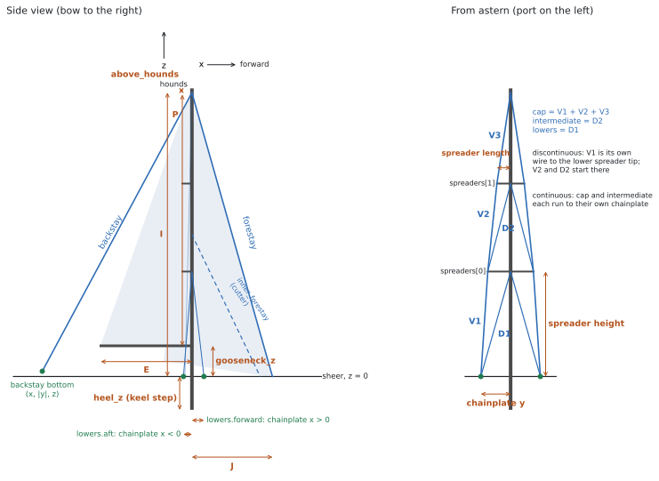

On this page
Writing a valueThree YAML trapsAxesboathullsail_planmastssectionspreadersshroudsstaysWhat each rig type needsload_casesanalysisWhat the checker checksThe boat file
A boat file is one YAML file in boats/ that describes one rig. rigframe reads it, builds the 3D frame,
tunes it at the dock, sails it through the load cases and writes the report. Nothing else about the boat
lives anywhere else.
- Start from
boat-template.yaml, or from the example closest to your rig: masthead sloop, two spreader sets, masthead cutter, ketch with a triatic, ketch with split backstays. - Or have an AI assistant draft it for you with the boat-file prompt.
- The machine-readable rules are in
schema/boat.schema.json. VS Code with the YAML extension reads the first line of every boat file and checks it as you type.

Drawn for this repository from the Oceanis 440 example. MIT.
Writing a value
Every number carries its unit. Use the unit your source used; rigframe converts.
| Kind | Units | Examples |
|---|---|---|
| Length | mm cm m in ft |
53.15 ft, -19 in, 3.7 mm |
| Wire size | the same, with fractions | 10 mm, 3/8 in, 1 1/4 in |
| Mass | kg t lb |
9299 kg, 22800 lb |
| Percentage | % |
20 % (pretension), 135 % (LP), 37 % (a height) |
| Angle | deg |
15 deg |
| Area | mm^2 cm^2 m^2 in^2 |
36.0 cm^2 |
| Second moment, torsion constant | mm^4 cm^4 m^4 in^4 |
2430 cm^4 |
| Stress, modulus | MPa GPa ksi psi |
240 MPa, 70 GPa |
| Moment | N*m kN*m kgf*m lbf*ft |
46.5 kN*m |
A value can be bare, or carry where it came from:
I: 53.15 ft # bare: counts as an estimate
I: {value: 53.15 ft, basis: published, ref: gob} # with its source
basis is one of four words. The report's first page lists every input still marked estimate, so the
owner knows what to measure.
| basis | Means |
|---|---|
measured |
Taken on this boat. |
maker |
The spar or rigging maker's figure for this part. |
published |
The builder, the designer, a class association, a review, a broker listing. |
estimate |
Anything else, including a value copied from an example file. |
ref names a key in boat.sources, where the full citation goes once:
boat:
sources:
gob: Good Old Boat sail data, Beneteau Oceanis 440, https://goodoldboat.com/saildata/boat/beneteau-oceanis-440/
Three YAML traps
- A comma inside
{ }ends the value.{value: 650 cm^4, basis: estimate, note: traced, cell closed}turnscell closedinto a new key. Quote any note with a comma:note: "traced, cell closed". - No tabs. Indent with two spaces per level.
- A bare number needs a unit.
I: 53.15fails;I: 53.15 ftpasses.RM_factoris the one plain number.
Axes
xforward, measured from the main mast's centreline. Forward of the mast is positive, aft negative.yto port. Give|y|for anything with a port and a starboard twin; both sides are built.zup, measured from the sheer (the deck edge). Below deck is negative.
boat
| Key | Required | What |
|---|---|---|
name |
yes | Builder and model. |
year |
Model year of this boat. | |
designer |
||
rig |
yes | masthead sloop, fractional sloop, masthead cutter, fractional cutter, masthead ketch, fractional ketch, masthead yawl, fractional yawl. |
variant |
What sets this file apart from another file for the same boat (split backstays). |
|
notes |
Anything a reader should know: changes from factory, a replacement mast, a bowsprit, conflicting sources. | |
sources |
Short id → full citation. |
Don't put the owner's name, the hull identification number, the boat's name or where it's kept in this file. A pull request to a public repository is public.
hull
| Key | Required | What | Where to find it |
|---|---|---|---|
displacement |
yes | Design displacement. | Builder's brochure, sailboatdata.com, class association. When sources disagree, give the figure you used and say why in note. |
beam |
yes | Maximum beam. | Same. |
GZ30 |
yes | Righting arm at 30° heel. $RM_{30} = \Delta \cdot g \cdot GZ_{30}$ sizes every sailing case. | A stability curve: the CE stability documents, the builder, a naval architect. Small-angle figures, such as a racing certificate's righting moment, don't give GZ at 30°. Without a curve, use 0.70 m with basis: estimate and say so. |
RM30 |
Righting moment at 30°, if published. It wins over GZ30. |
sail_plan
| Key | Required | What |
|---|---|---|
I |
yes | Forestay hounds above the sheer. |
J |
yes | Front face of the main mast to the forestay tack. |
P, E |
yes | Main luff and foot. |
J2 |
cutters | Main mast to the staysail stay's tack. |
PY, EY |
ketches, yawls | Mizzen luff and foot. |
headsail_LP |
Genoa LP as a percentage of J. Default 135 %. |
|
staysail_LP |
cutters | Staysail LP as a percentage of J2. |
headsail_furling |
true or false. |
|
main_furling |
none, in-mast, in-boom. An in-mast furler means the section has an open luff slot. |
|
reef_fraction |
The deep-reefed luff as a percentage of P. Default 60 %. |
|
main_load_shape |
triangular (most load at the boom; default) or uniform. |
I, J, P and E are the most widely published rig figures. sailboatdata.com, Good Old Boat's sail data and sailmakers' online sail-plan databases list them for most production boats.
masts
A list of one mast (sloop, cutter) or two (ketch, yawl). One of them must have id: main.
| Key | Required | What | How to measure |
|---|---|---|---|
id |
yes | main or mizzen. |
|
x |
Fore-and-aft position. The main is 0 m; a mizzen is negative. |
Deck tape from the main mast to the mizzen. | |
hounds_z |
mizzen | Hounds height above the sheer. The main's is I. |
|
step |
yes | keel or deck. |
Look below: does the mast pass through the deck? |
heel_z |
keel-stepped | The heel below the sheer, negative. | Partners to the mast step, below. |
gooseneck_z |
yes | Gooseneck above the sheer. | Tape from the deck. |
above_hounds |
yes | Masthead above the forestay tang. | From the sail plan, or from a photo with the forestay toggle for scale. |
section |
yes | See below. | |
spreaders |
yes | List, bottom to top. Can be empty. | |
spreader_section |
Spreader airfoil properties. | ||
spreader_root |
released (free to rotate up and down; default) or fixed. |
||
shrouds |
yes | See below. |
section
Give the maker's figures when you have them; they win over anything rigframe works out from the outline.
| Key | What |
|---|---|
profile |
Maker and profile name, such as Z-Spars Z900E. The single most useful thing to find: spar makers publish section tables with A and I for their profiles, and the profile code is often on a label at the mast foot or in the boat's papers. |
shape |
oval (default), elliptical, pear. |
chord, width, wall |
Fore-and-aft depth, athwart width, wall thickness. Calipers on the mast at the gooseneck. |
luff_slot |
Width of an open luff slot (in-mast furlers). |
torsion |
closed (default). The frame always uses a closed-section J; an open section's torsion is checked by hand in the report. |
A, mass_per_length |
Area, or mass per metre (rigframe divides by 2700 kg/m³). |
I_fore_aft, I_athwart |
Second moments: fore-and-aft bending and athwartships bending. |
J |
Torsion constant, if known. |
E, yield |
Default 70 GPa and 240 MPa (6061-T6 / 6082-T6). Yield is used only for the utilisation figures. |
spreaders
| Key | What |
|---|---|
height |
Above the sheer, as a length or as a percentage of this mast's hounds height. |
length |
Mast centreline to the tip, along the spreader. |
sweep |
Sweep aft in plan view. 0 deg is in line with the mast. |
Spreader heights are easy to get from a photo of the rig taken square-on, scaled by a known height.
shrouds
| Key | What |
|---|---|
arrangement |
continuous: each shroud runs from its chainplate to its mast fitting, over the spreader tips. discontinuous: V1 runs from the chainplate to the lowest spreader tip, and the upper wires (V2, D2 ...) start there. |
cap |
The upper shroud to the hounds. |
intermediate |
Needed with two or more spreader sets. |
lowers |
single (one lower each side), or forward and/or aft. |
Each shroud takes:
| Key | What |
|---|---|
size |
1x19 diameter: 10 mm, 3/8 in. Read it off the swage or the turnbuckle, or caliper the wire. |
segments |
Segments of a different size: {V1: 12 mm}. |
chainplate |
{x, y} of the chainplate pin. Not needed for an intermediate in a discontinuous rig. |
pretension |
Dock tune target, as a percentage of the wire's breaking load, on the gauged segment. Typical: caps 15–20 %, lowers 10–15 %. |
gauge_on |
The segment the tune is measured on (V2). Default: the bottom one. |
Segment names: V1, V2, V3 run up the cap from the bottom; D1 is a lower, D2 an intermediate. The figure at the top shows them.
Chainplate positions are the measurement that matters most. In the cutter example, how far aft the aft lowers land decides whether they can hold the staysail stay.
stays
| Key | Required | What |
|---|---|---|
id |
yes | Your name for it. Other stays refer to it by this. |
kind |
yes | forestay, inner_forestay, backstay, triatic, mizzen_forestay, mizzen_backstay. |
top |
yes | {mast: main, at: hounds}, {mast: main, at: masthead}, or {mast: main, at: 50 %}. |
bottom |
yes | A deck point {x, y, z}, or a mast fitting (a triatic's bottom is {mast: mizzen, at: hounds}). |
legs |
single (default) or split: one leg each side, and bottom.y is half the spread. |
|
size |
yes | 1x19 diameter. |
pretension |
Dock tune target, % of breaking load. | |
adjusts |
The stay whose tension this stay's adjuster sets. A backstay usually adjusts: forestay, because the forestay sits inside the furler. |
|
carries |
headsail, staysail. |
What each rig type needs
| Rig | Masts | Stays |
|---|---|---|
| Sloop | main |
forestay, and a backstay (single or split) |
| Cutter | main |
forestay, inner_forestay, backstay. Without running backstays, the aft lowers or the backstay hold the inner forestay. |
| Ketch or yawl, triatic | main, mizzen |
forestay, triatic, mizzen_backstay that adjusts: forestay |
| Ketch or yawl, split backstays | main, mizzen |
forestay, backstay (split, round the mizzen), mizzen_forestay, mizzen_backstay |
A two-masted rig with no triatic needs a mizzen_forestay, or nothing holds the mizzen head forward and
the dock tune has no solution. The checker says so.
To compare two arrangements of the same boat, write two files and set boat.variant in each.
load_cases
Leave it out and rigframe runs a default set for the rig type: full sail at RM ×1.0 and ×1.5, headsail only, deeply reefed main only, and the forestay-sag case. To choose your own:
load_cases:
- {name: "Full sails, RM ×1.0", sails: full, RM_factor: 1.0}
- {name: "Forestay sag, RM ×1.5", sails: full, RM_factor: 1.5, headsail_load: along_stay}
sails |
Meaning |
|---|---|
full |
Full main and headsail. |
headsail_only |
Headsail alone. |
main_only |
Full main alone. |
reefed_main_only |
Main reefed to reef_fraction, nothing else. |
staysail_reefed_main |
Cutter heavy-weather rig. |
jib_and_jigger |
Ketch or yawl: headsail and mizzen, no main. |
RM_factor scales $RM_{30}$ (gusts, heel past 30°). headsail_load: along_stay spreads the sail's pull
along its stay so the stay sags, and runs the large-displacement (corotational) solver, which is the only
way to get the stay's real tension in that case.
analysis
All optional.
| Key | Default | What |
|---|---|---|
wire.construction |
1x19 |
|
wire.material |
316 |
|
wire.E |
107.5 GPa |
Effective modulus on the gross area. |
max_element |
0.5 m |
Longest mast element. |
stay_segments |
12 |
Segments per stay in the sag cases. |
crosscheck |
opensees |
none skips the OpenSees cross-check. |
What the checker checks
rigframe validate boats/my-boat.yaml runs first, on your machine or in the pull request. It checks:
- the YAML itself (indentation, tabs, the comma trap);
- every key name and every unit, against the schema;
- that the masts and stays match the rig type (a cutter has an inner forestay, a ketch has two masts);
- that every
mast:andadjusts:names something that exists; - that the main's head fits below the masthead, spreaders run bottom to top below the hounds, and a keel-stepped mast has its heel below deck;
- that something holds each masthead aft and forward.
It then prints how many inputs are still estimates. A file can pass with every value an estimate; the report will say so on its first page.